Mo spends a part of his time trying
to get his tongue over the bit. He's got a large rubber bit right now.
He doesn't like it, but he hasn't succeeded in getting his tongue over
it.
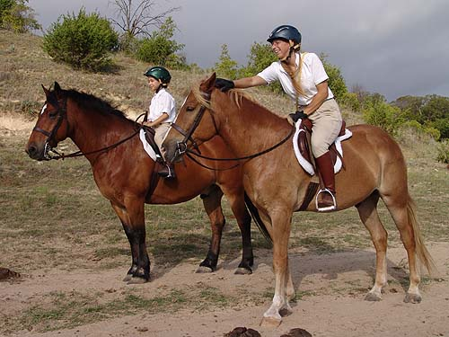
Mo's a good guy.
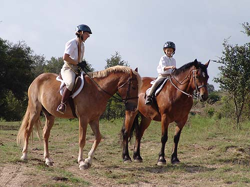
Waiting for the hounds to come out.
Thuy's great at standing, and he's a good influence on Mo.
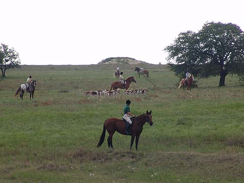
Far off in the background with Thuy
and Amanda. We headed out first, in case any hounds broke. Mo's pretty
confident about leading the way, as long as someone is following....
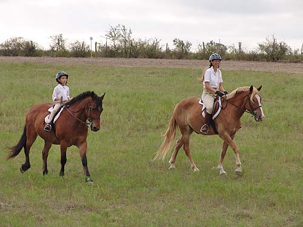
Reversing and now following behind.
Both horses get a little more forward when they have someone to follow.
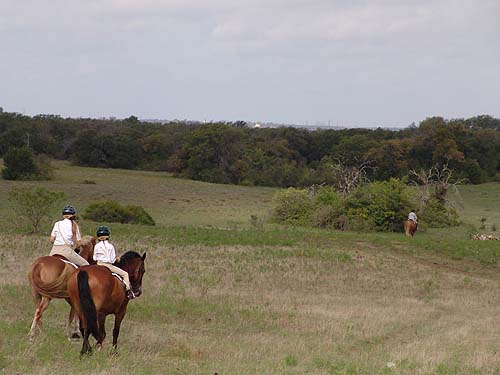
We stayed well back.
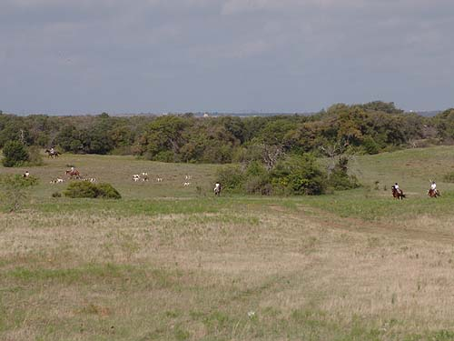
Heading back toward the cameraman
we're on the far right.
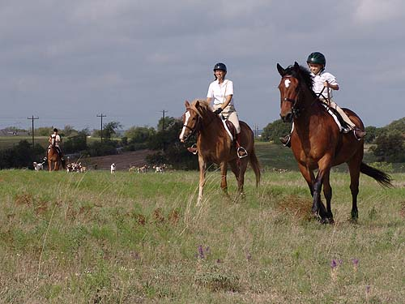
We trotted out in front of the hounds.
I preferred to follow behind Thuy, so he saw no need to rush with Amanda
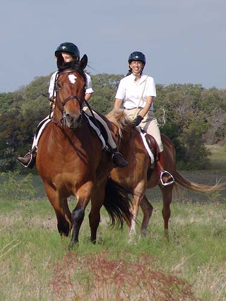
Mo's got a lovely, steady trot.
It's very adjustable. This day we kept it slow to give Thuy no reason to
speed up.
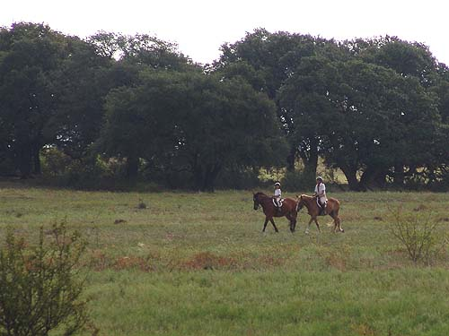
Mo watched everything, but he's seen
it before and wasn't worried.
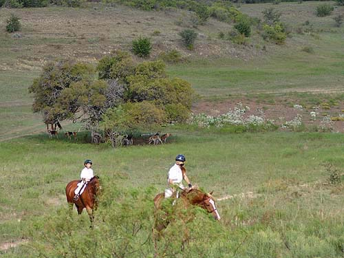
We were sent to watch from atop the
hill.
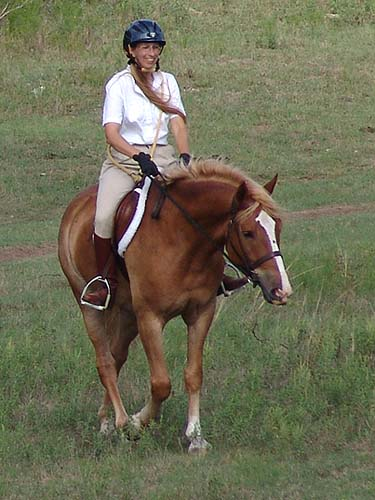
He's more and more willing to
use himself properly.
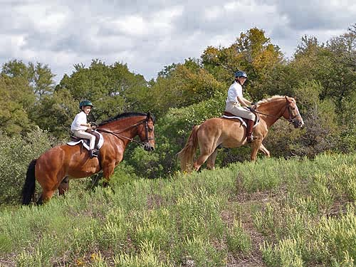
Not as chunky as Thuy, but actually
taller.
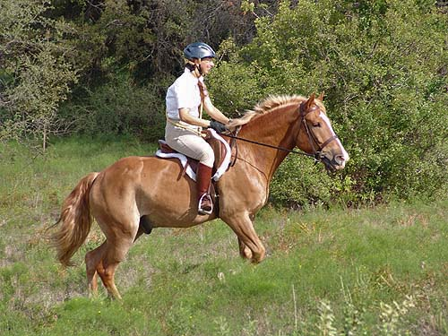
This is the sort of work that will
keep him fit.
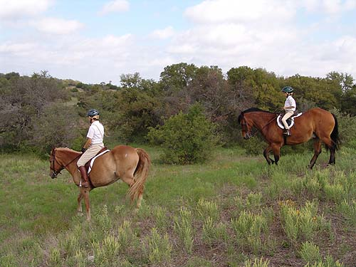
Asking for a little balancing as we
head back down.
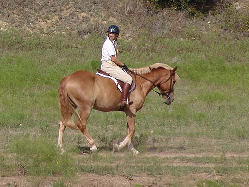
I had to pay a lot of attention to
Amanda. Luckily Mo takes care of himself.
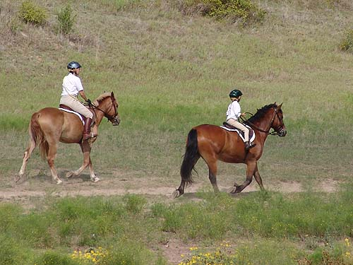
Amanda passing us up at the trot.
Mo can trot (and walk) much faster than
Thuy, but since he's ratable, I can ask him to slow it down for them.